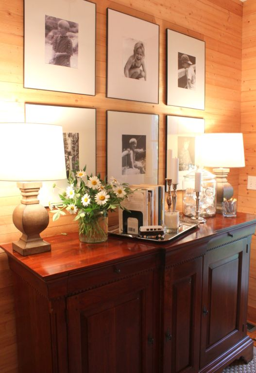

.png)
.PNG)
.PNG)
.PNG)
.PNG)
.PNG)
.JPG)
.JPG)
.PNG)
.PNG)


Happy Friday everyone!  We are finally seeing some sunshine around here, so it now seems like summer outside. 🙂 I know many of you have had the never-ending rain as well.  I hope you are seeing some sunshine, too.  This is my last Friday of summer break (boo hoo), and I thought I would do a quick post on a few little touches of summer around the house.The daisies in the yard have gone berserk with all the rain!  I massed a bunch of them haphazardly in a jar in the foyer.  (Wish I had a real VW van like that and could take off for the beach in it!).jpg)
The big jar holds water bottles ready for you there by the door, and lemonade packets are in the other container to grab in case someone wants to add it to their water.
With all the clouds and rain we have been having, sunny yellow has been badly needed here. Â Even the piano’s candy jar got a little touch of summer in a jar.
 I added some yellow to the dining room cabinet with cookbooks and napkins.
I added some yellow to the dining room cabinet with cookbooks and napkins.

The desk in the kitchen has some summer sunshine in the cookbooks, notebooks, and even some foods in the cabinet.
 Here is the latest chalkboard recipe….fried green tomatoes. Â I hope to have a lettering tutorial out for you next week. Â Fingers crossed here…(well..not actually crossed…I need them uncrossed to do the tutorial!)
Here is the latest chalkboard recipe….fried green tomatoes. Â I hope to have a lettering tutorial out for you next week. Â Fingers crossed here…(well..not actually crossed…I need them uncrossed to do the tutorial!)
Gerbera daisies add a small touch of summer to the master bathroom.


 And the kids’ bathroom has a few in a jar (from Serenbe!) over the sink.
And the kids’ bathroom has a few in a jar (from Serenbe!) over the sink.

And finally, more Gerbera daisies add another touch of summer to our master bedroom.
 Just little touches here and there….nothing over the top.
Just little touches here and there….nothing over the top.
Hope you are having a fantastic Friday! Â Busy weekend ahead for us. Â I hope we make some purchasing progress on the room over the garage AND the boys’ bedroom. Â Wish us luck!
Happy weekend.


.PNG)
Love all your summer touches. Flowers always brighten up any room! XO, Pinky
Hi there Kelly,
Elaine Heron here from way across the pond in England. Very exciting day here today, waiting for Kate’s baby to be born but, still time to check out your website and, any new ideas I might find for the home we are fixing up!
I started to look at your website about 2 months ago, and was really taken with your lovely ideas. You live in a wonderful part of the USA, and I am quite envious of the beautiful area surrounding your home.
English homes tend to be a “lot” smaller than Americian homes ( wish I had the space you had!) but the ideas still come thiick and fast When I check out your updates. You have a lovely knack of making small changes that really look special. We have “nearly ” finished 2 rooms out of 7, still a way to go. However I don’t mind because it gives me time to change my mind, and check out what you have done! I have given your website to a few friends too and they love it.
Keep inspiring, and I will keep up the English interest over here
Elaine Heron
——————————————————————————-
It’s a boy!! Any predictions for the royal name? I am leaning towards Phillip as one of them. It would be so fun to be in England today. 🙂 Thank you for popping over with your extremely kind words, Elaine. I love it! Good luck with the home you are fixing up. I am so glad that you can find some inspiration here, and thank you for passing on the website info to your friends. I appreciate any and all readers that come my way! Please do stop by again.
Kelly
Kelly,
It’s amazing that you can take something as ordinary as a water bottle and turn it into a darling display! Love spending time at your blog. 🙂 I am also getting ready to start back to school–dreading the 90 degree temps in an older (non-air-conditioned) building. Ugh! In the ‘good old days’, people didn’t have to go back to school until after Labor Day!
——————————————————————————
Non-air conditioned building. Oh no! I do remember those days! And I remember fussing about it to our school superintendent when it was so hot here we took our children in the hall for classes because it was cooler there. Starting after Labor Day was much more tolerable than in the middle of summer. Wonder if they could postpone the start date for you all…or go only half days in the beginning. I would much rather work later into June, and start after Labor Day….but they never asked me! 🙂
Kelly
Hi there Kelly!
I am always so impressed with your blog – the decorating ideas, the photography, the writing – you do such a great job! I particularly enjoyed the grouping of your perfume bottles on a plate with the flowers in the bathroom. I have a few bottles on my dresser, and they always look a bit “lost”. Thanks for this little inspiration!
Megan
——————————————————————————
Thanks Megan! I am so happy you found something to give you an idea here. I wouldn’t want your bottles of perfume to be lost. 🙂 (Love how you put that…I totally understood what you meant!)
Kelly
I agree with everyone, your home is wonderful! I really enjoy your color tours…you do it so well. I notice your window frames are unpainted….I like it, a nice rustic touch with the other woodwork painted. When we built our home 36 years ago, we did all the interior painting ourselves and had lots of big windows with lots of panes….needless to say, it was a long time before all of them were painted and I kind of wish I had left some of them natural.
I am looking forward to your lettering tutorial, your chalkboards look so professional.
——————————————————————————–
Oh Martha, window trim takes FOREVER to do. I feel your pain! We have always done all our interior painting too (with lots of help from relatives.) Painting this house was much easier than our previous one because so much was left natural. (But all that rustic wood did have to have a coat of polyurethane on it.) I am glad you like the summer decorating tour. Working on that letting tutorial…
Kelly
New follower of your wonderful blog. As others have mentioned, your placement of items attracted my eyes. I’ve already checked out the Target drapes and lamps for my house and love the picture frames. I can only image how creative you are in the classroom. I retired from teaching a year ago this past May 31st after thirty-seven years of teaching children ages five through fourteen. I now have the honor of enjoying our seven grandkids.
——————————————————————————
Welcome, Sandy! I am so glad you are a new follower. I hope you will find ideas here that you can use (and yes, you will see Target items regularly here.) Thirty-seven years of teaching! Good grief! That is amazing. I am starting 32 this year. You know this time of year is very busy as we crank up for the arrival of students. I have a long list sitting beside me right now that I need to get started on.
Kelly
FYI I have pretty much wiped out Fort Wayne’s supply of frames like yours. Having fun getting black and white copies of grandchildrens’ pictures when they were small. Looking forward to more posts and more great ideas. Good luck with your school year.
——————————————————————————–
Peggy, that is too funny about the picture frames! (I have been known to be guilty of the same thing, too.) That is a great idea you have of the pictures of your grandchildren. I know that looks good!
Kelly
Kelly- It all looks just lovely-from the daisies to the bits of yellow here and there right down to the Gerbera daisies in the bedroom. Seeing your bedroom reminds me of our bedroom on the lake a few years ago. I had the red, white and blue and I just loved it. It was always so homey and warm feeling. Yours is beautiful~xo Diana
—————————————————————————–
That red, white, and blue with all the plaids has been in there a looooong time. But you are right, Diana. It does give it a warm feeling. Man, I would love to have a house on a lake. Lucky you!
Kelly
Everything looks lovely. Love the idea about the water bottles and the lemonade. I love decorating with books, so I love your display on the silver tray. Your home is lovely.
Thanks, Patty
——————————————————————————
Glad you liked it all, Patty. The water bottles are handy dandy. (I need to drink more myself, but I only like it if it is fizzy!) You are not alone in loving to decorate with books. Books are a requirement in a room to me!
Kelly
Loving all the rooms with their special touches – so cozy and inviting. Phew, today it was ninety eight and I’ve lost track of the last time the daily high was in the eighties. (New England is not supposed to be like this, for long, anyway.) Of course, once you go back to school there will only be sunny days. Here’s to a great school year, seems funny to be saying that in the middle of July, but wishing you all the best.
——————————————————————————
I really think Mother Nature is totally confused this summer! When in the world has New England had days that are hotter than in the South? And when have we ever had daily rain in Georgia in the summer? The contractors around here can get nothing done with all this wetness. I would hate to be trying to paint outside. Thank you for the compliments on the decor and the well wishes for the school year. (But I am trying to not think about school today.)
Kelly
Kelly, you have such a beautiful style. I love all your black & white photos and vignettes. Your home is so pulled together but homey and cozy and welcoming. I just love it!! Enjoy your summer decor.
——————————————————————————
Lisa, you are too kind. The black and white photos have worked in these rooms for years…and that is amazing, considering how much I used to change out pictures here. To me, photos are pieces if art that show a family actually lives in the house.
Kelly
Lovely! Happy and sunny. Sooo looking forward to the lettering tutorial. Inspired by you, I have chalkboards all over the house, but my lettering needs much improvement! Wishing you a lovely and productive weekend!
—————————————————————————–
That is wonderful that you have done so many chalkboards, Barbara! Keep it up. Our weekend was only minorly productive…ran into dead ends on the furniture I was looking for. But I did manage to find some pillows that had been discontinued. That was a good thing.
Kelly
Enjoyed the “last summer fling” of At Home with Kelly! I know you are gearing up for preplanning and getting your school ideas into motion. This year is going to be so exciting for you but different from having a home room. It will be a challenge but hopefully it will give you time to have more “Kelly Time” outside of work. Looking forward to the chalkboard lessons!
——————————————————————————
Thanks for the school pep talk, Louvina! (I sure need it.) I have a long to-do list of things to make for school this week, but it is MUCH shorter than the one I normally have at this time of year. Thank goodness! I hope you are right about have more time for things outside of work. That has been my goal in changing jobs.
Kelly
Love all the little touches. I think they make a house special. Totally inspired now. Gotta go do something to my house. Have a great weekend!
——————————————————————————
Jayne, you are so good at seeing ideas and turning them into realities in your home. That is a real talent. I am so glad I could help you get your inspiration on! You have a great weekend too.
Kelly
Kelly,
I love Gerbera daisies too! The bright coral orange ones are my favorite and I have them on our front porch and back deck right now! We also have those same Target lamps at the lake house! You are a genius like, Nancy said! I love the seasonal items you always put in your glass jars! I always give those little lemonade and drink packets with plastic lidded tumblers to the teachers I teach with as gifts. I love them and they always seem to also! Thanks for sharing all of your seasonal home ideas. I always like to see what the new header looks like. Do you stand on a ladder to get that shot? 😉
——————————————————————————-
What a thoughtful gift for the teachers, Dawn! You always seem to have great ideas for presents. Those Target lamps are quite popular, aren’t they? I guess because they can work well with basically any style room. When I do the header shot of the table I stand on one of the stools from the kitchen island. I have an absolutely awful fear of heights! Thanks for noticing the change in the header.
Kelly
Love all you little touches. So charming! You really are a very talented lady.
Enjoy your week-end!!!!
——————————————————————————
Flowers make it easy to add charm to a room (and color!) Thank you for reading and leaving your kinds words again Marlene. I hope you have a great weekend!
Kelly
Oh I love the touches of yellow, the are so pretty and just brings sunshine into any room. Wish we had a little of your rain, it has been so dry for so long and soooooooooooooo hot. We are finally down to around 104 from ll8, so we are having a cold spell. lol. Beautiful addition to all of your rooms with the flowers. Hugs, Marty
——————————————————————————–
Thank you, Marty. How in the world do you stand that kind of heat? That is awful. Wish I could send you a LOT of this rain. I think you need it!
Kelly
Everything is just beautiful! LOVE the yellow. My favorites are your chalkboards with such beautiful penmanship.
May I ask where you purchased your drapes in the kids bath? That fabric is gorgeous!
Hope you have a great weekend. We are melting here in VA.
——————————————————————————-
I think you are talking about the drapes in the master bath, Mary.(The kids’ bath actually just has a shade on it.) I have been waiting on someone to ask that question because you are not going to believe it. They are from….Target. Seriously. You can see them here:
http://www.target.com/p/threshold-farrah-floral-window-panel/-/A-14258316#prodSlot=large_1_6 They did not have the length I needed so I purchased one extra panel that I split and added to the other two so that they would be long enough to go to the floor. I have decided that if I can’t find what I am looking for at either Target or Pottery Barn, then I probably don’t need it. ha ha.
Wish I could send you some of our rain so that you could cool off!
Kelly
Mmmm…flowers. Nothing says summer like fresh picked posies from the garden. I love that you have spread them throughout the house. It’s such a great touch. Happy shopping and have a great weekend!
——————————————————————————
You are so right, Rose! Flowers and greenery always add life to a room (well until, of course, I kill them. :))
Kelly
Just love your summer touches Kelly!…your rooms are always so beautifully decorated…and love your lamps in the foyer…..trying to find some similar to yours…and just an FYI, I looked for the Mary Englebreit magazine in my stash and unfortunately cannot find that summer issue!…will keep looking though!…have a great time shopping!…and looking forward to your tutorial!
——————————————————————————-
Shirley, those lamps came from Target. Seems like I saw some taller versions at Pottery Barn. Thank you for looking for that issue, and I hate that you couldn’t find it in all your old issues. I have been giving away decade’s worth of Coastal Living recently. I sure hope I don’t have to find something in them.
Kelly
It all looks beautiful, Kelly! But then, your home always does.
—————————————————————-
It doesn’t always, but I will gladly take your compliment. 🙂 (You should see the big messes in the boys’ room and the study right now.)
Kelly
Kelly,
If you ever retire from teaching you really should start a decor biz. You do the best job of accessorizing, my favorite thing in a room–accessories well selected and well placed.
I can’t believe you have to return to school already. Our Southern California schools don’t start until September, the teachers seem to return sometime in August.
Enjoy your weekend, happy you have some sunshine.
Karen
—————————————————————————–
What a nice compliment, Karen. Thank you! When I retire I would love to open a shop that HAS accessories, and then let someone else have the fun of putting them into place. LOL.
Yes, sadly we have to return to work in the middle of summer. It is crazy. And would you believe it rained about an hour after I wrote my post bragging about getting sunshine?! I guess we are supposed to get a daily dose of rain this summer.
Kelly
Your house is adorable. Can I come live with you?! 🙂 The water is a brilliant idea! Love all of it.
PS: I love color! It is refreshing to visit a blog that isn’t all white!
—————————————————————————–
Thank you Talia! You can come on and move in. With all the teens and twenty-somethings in and out of here, I doubt we would notice another person. But you will have to do your own laundry…gotta draw the line somewhere! And thank you for the vote of confidence on color. Sometimes when I see all the pins of white and gray rooms on Pinterest it makes me think our house must be really out of style. But then I remember our house is for us…not for home décor stylists.
Kelly
I love it ALL! All of the colors everywhere are great! I love color. No neutral here. 😉 The water bottles and drink packets by the door are genius! Are the lamp bases in the first 2 pictures from Target? I have been looking at them online but there are no reviews so I’m just curious as to your opinion of them? Thanks! Have a great weekend.
——————————————————————————
I love it when someone calls me a genius, Nancy! Especially since my sons would never ever think of me like that.🙂 You are a good shopper to spot those lamps as being from Target! I love them. Now they aren’t that tall..with the shades they are 21 1/2 in. (I just measured them.) But they are a good size for the buffet. I actually chose them because I thought I would paint them different colors as I want, but so far, the wood has been a good look for what has been used there. (I will probably want to paint them red at Christmas, knowing me.)
Kelly